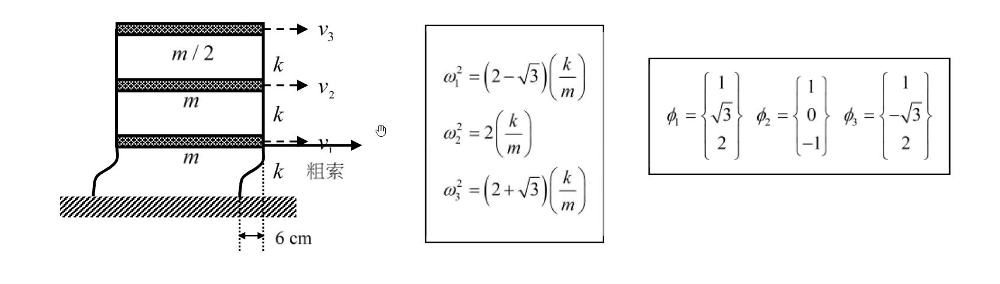

考題編號：SD-2021-3
主分類： SD-U1-3 單自由度、多自由度系統之動態分析及應用
副分類： SD-U1-1 結構動力基本性質及原理
分析方法： MDOF模態疊加法（自由振動初始條件展開）
標籤： MDOF 3自由度 剪力建築 自由振動 模態疊加 初始條件 模態正交性 層間剪力 彈返法 模態展開
1. 原始題目重述 (Problem Restatement)
三層樓剪力建築，以彈返法（snap-back test）進行自由振動實驗：
- 拉力位置： 一樓向右拉位移 6 cm，隨後突然完全放開
- 樓板： 假設為剛性

圖說：一樓質量 $m$（速度 $v_1$）、二樓質量 $m$（速度 $v_2$）、三樓質量 $m/2$（速度 $v_3$）；每層層間勁度均為 $k$；粗索施力於一樓，初始位移 6 cm。
已知振動頻率： $$\omega_1^2 = (2-\sqrt{3})\frac{k}{m}, \quad \omega_2^2 = 2\frac{k}{m}, \quad \omega_3^2 = (2+\sqrt{3})\frac{k}{m}$$
已知振態（由下層至頂層，分量對應 1F、2F、3F）： $$\phi_1 = \begin{Bmatrix} 1 \\ \sqrt{3} \\ 2 \end{Bmatrix}, \quad \phi_2 = \begin{Bmatrix} 1 \\ 0 \\ -1 \end{Bmatrix}, \quad \phi_3 = \begin{Bmatrix} 1 \\ -\sqrt{3} \\ 2 \end{Bmatrix}$$
求：頂層（三樓）的層間剪力
2. 考題核心精神與出題者意圖 (Core Concepts & Examiner's Intent)
核心觀念： 以模態正交性將任意初始條件展開為各振態貢獻，再對三樓層間位移（$x_3 - x_2$）乘以層間勁度得層間剪力。
出題者測驗能力：
- 正確建立質量矩陣（注意三樓質量 $m/2$）
- 以模態展開係數公式 $A_i = \phi_i^T[M]\mathbf{x}(0) / \phi_i^T[M]\phi_i$ 求各模態振幅
- 由位移時程差求層間位移，再求層間剪力
- 理解「層間剪力 = 層間勁度 × 層間位移」的物理含義
關鍵陷阱： 質量矩陣中三樓是 $m/2$，若誤用 $m$ 將導致所有模態展開係數錯誤。
3. 解題戰略地圖與陷阱分析 (Strategic Roadmap & Trap Analysis)
作戰計畫：
- 確認初始條件：$\mathbf{x}(0) = \{6,0,0\}^T$ cm，$\dot{\mathbf{x}}(0) = \{0,0,0\}^T$
- 建立質量矩陣 $[M] = \text{diag}(m, m, m/2)$
- 對每個振態計算 $\phi_i^T[M]\phi_i$（模態質量）及 $\phi_i^T[M]\mathbf{x}(0)$（模態初始值）
- 求展開係數 $A_i$，驗算 $\sum A_i\phi_i = \mathbf{x}(0)$
- 寫出 $x_2(t)$ 和 $x_3(t)$ 的時程
- $V_3(t) = k[x_3(t) - x_2(t)]$
四大陷阱：
| # | 陷阱 | 正確處理 |
|---|---|---|
| 1 | 三樓質量誤用 $m$（應為 $m/2$） | $[M] = \text{diag}(m, m, m/2)$ |
| 2 | 初始條件誤設 $x_2(0) \neq 0$ | 彈返法：僅 $x_1(0) = 6$ cm，其餘為零 |
| 3 | 初始速度 $\dot{\mathbf{x}}(0)$ 忘記設為零 | 突然放開瞬間，台車靜止，速度為零 |
| 4 | 層間剪力用 $k \cdot x_3$ 而非 $k(x_3 - x_2)$ | 頂層層間剪力 = $k \times$（三樓與二樓的相對位移） |
3.5 變數層次分析 (Variable Hierarchy Analysis)
複習提示：第一次解題後，在每個卡住的知識點旁標記
⚠；第二次複習時只看有⚠的項目。
最終目標
頂層（三樓）層間剪力 $V_3(t)$ 的完整時間歷程
本題關鍵公式（依計算順序）
$$\text{Step 1: 模態質量} \quad M_i^* = \phi_i^T[M]\phi_i$$
$$\text{Step 2: 模態初始值} \quad c_i = \phi_i^T[M]\mathbf{x}(0)$$
$$\text{Step 3: 展開係數} \quad A_i = \frac{c_i}{\boxed{M_i^*}}$$
$$\text{Step 4: 位移時程} \quad x_j(t) = \sum_{i=1}^{3} A_i\phi_{ji}\cos(\omega_i t)$$
$$\text{Step 5: 層間剪力} \quad V_3(t) = k\left[\boxed{x_3(t)} - \boxed{x_2(t)}\right]$$
L1：題目直接給定
| 符號 | 數值 | 說明 |
|---|---|---|
| $m_1, m_2$ | $m$ | 一、二樓質量 |
| $m_3$ | $m/2$ | 三樓質量 |
| $k$ | $k$ | 每層層間勁度 |
| $x_1(0)$ | $6$ cm | 一樓初始位移（彈返法） |
| $x_2(0), x_3(0)$ | $0$ | 其餘樓層初始位移 |
| $\phi_1,\phi_2,\phi_3$ | 如題 | 三個振態向量 |
| $\omega_1^2, \omega_2^2, \omega_3^2$ | $(2\pm\sqrt{3})k/m$，$2k/m$ | 振動頻率平方 |
L2：需知識點推導
模態質量計算
| 符號 | 公式／來源 | 卡關? |
|---|---|---|
| $M_1^*$ | $1^2m + (\sqrt{3})^2m + 2^2(m/2) = m+3m+2m = 6m$ | |
| $M_2^*$ | $1^2m + 0^2m + (-1)^2(m/2) = m+0+m/2 = 3m/2$ | |
| $M_3^*$ | $1^2m + (-\sqrt{3})^2m + 2^2(m/2) = m+3m+2m = 6m$ |
模態初始值
| 符號 | 公式／來源 | 卡關? |
|---|---|---|
| $c_1$ | $\phi_1^T[M]\mathbf{x}(0) = 1\cdot m\cdot 6 = 6m$ | |
| $c_2$ | $\phi_2^T[M]\mathbf{x}(0) = 1\cdot m\cdot 6 = 6m$ | |
| $c_3$ | $\phi_3^T[M]\mathbf{x}(0) = 1\cdot m\cdot 6 = 6m$ |
展開係數
| 符號 | 公式／來源 | 卡關? |
|---|---|---|
| $A_1$ | $6m / 6m = 1$ cm | |
| $A_2$ | $6m / (3m/2) = 4$ cm | |
| $A_3$ | $6m / 6m = 1$ cm |
L3：深層知識（不懂就卡住）
| 知識點 | 說明 | 卡關? |
|---|---|---|
| 模態正交性 $\phi_i^T[M]\phi_j = 0\ (i\neq j)$ | 保證模態展開係數可獨立求解 | |
| 彈返法初始條件的標準解釋 | 僅施力樓層有初始位移，其他樓層假設為零 | |
| 層間剪力 = 層間勁度 × 相對位移 | 剪力建築中，柱剪力 = $k_i(x_i - x_{i-1})$ | |
| $\dot{\mathbf{x}}(0) = 0$ 的物理意義 | 靜態拉開後釋放，初速為零，自由振動中無 $\sin$ 項 |
4. 步驟化詳細計算過程 (Step-by-Step Detailed Calculation)
Step 1：建立質量矩陣與初始條件
$$[M] = \begin{bmatrix} m & 0 & 0 \\ 0 & m & 0 \\ 0 & 0 & m/2 \end{bmatrix}$$
彈返法初始條件（一樓拉 6 cm，突然放開）：
$$\mathbf{x}(0) = \begin{Bmatrix} 6 \\ 0 \\ 0 \end{Bmatrix} \text{ cm}, \qquad \dot{\mathbf{x}}(0) = \begin{Bmatrix} 0 \\ 0 \\ 0 \end{Bmatrix}$$
策略註解：初速為零 → 自由振動解只含 $\cos$ 項：$\mathbf{x}(t) = \sum_{i=1}^3 A_i\phi_i\cos(\omega_i t)$
Step 2：計算各振態的模態質量 $M_i^* = \phi_i^T[M]\phi_i$
振態 1（$\phi_1 = \{1,\sqrt{3},2\}^T$）：
$$M_1^* = 1^2\cdot m + (\sqrt{3})^2\cdot m + 2^2\cdot\frac{m}{2} = m + 3m + 2m = 6m$$
振態 2（$\phi_2 = \{1,0,-1\}^T$）：
$$M_2^* = 1^2\cdot m + 0^2\cdot m + (-1)^2\cdot\frac{m}{2} = m + 0 + \frac{m}{2} = \frac{3m}{2}$$
振態 3（$\phi_3 = \{1,-\sqrt{3},2\}^T$）：
$$M_3^* = 1^2\cdot m + (-\sqrt{3})^2\cdot m + 2^2\cdot\frac{m}{2} = m + 3m + 2m = 6m$$
Step 3：計算模態初始值 $c_i = \phi_i^T[M]\mathbf{x}(0)$
由於 $[M]\mathbf{x}(0) = \{6m, 0, 0\}^T$（僅一樓有質量慣性貢獻）：
$$c_1 = 1\times 6m + \sqrt{3}\times 0 + 2\times 0 = 6m$$
$$c_2 = 1\times 6m + 0\times 0 + (-1)\times 0 = 6m$$
$$c_3 = 1\times 6m + (-\sqrt{3})\times 0 + 2\times 0 = 6m$$
策略註解：三個振態的一樓分量均為 1，所以 $c_1 = c_2 = c_3 = 6m$。模態質量的差異才決定展開係數的不同。
Step 4：求展開係數 $A_i = c_i / M_i^*$
$$A_1 = \frac{6m}{6m} = 1 \text{ cm}$$
$$A_2 = \frac{6m}{3m/2} = 4 \text{ cm}$$
$$A_3 = \frac{6m}{6m} = 1 \text{ cm}$$
驗算（必要步驟）：
$$\sum_{i=1}^3 A_i\phi_i = 1\begin{Bmatrix}1\\\sqrt{3}\\2\end{Bmatrix} + 4\begin{Bmatrix}1\\0\\-1\end{Bmatrix} + 1\begin{Bmatrix}1\\-\sqrt{3}\\2\end{Bmatrix} = \begin{Bmatrix}1+4+1\\\sqrt{3}+0-\sqrt{3}\\2-4+2\end{Bmatrix} = \begin{Bmatrix}6\\0\\0\end{Bmatrix} \checkmark$$
Step 5：寫出各樓層位移時程
$$\mathbf{x}(t) = 1\begin{Bmatrix}1\\\sqrt{3}\\2\end{Bmatrix}\cos(\omega_1 t) + 4\begin{Bmatrix}1\\0\\-1\end{Bmatrix}\cos(\omega_2 t) + 1\begin{Bmatrix}1\\-\sqrt{3}\\2\end{Bmatrix}\cos(\omega_3 t) \quad \text{[cm]}$$
三樓位移：
$$x_3(t) = 2\cos(\omega_1 t) + 4\times(-1)\cos(\omega_2 t) + 2\cos(\omega_3 t) = 2\cos(\omega_1 t) - 4\cos(\omega_2 t) + 2\cos(\omega_3 t) \text{ [cm]}$$
二樓位移：
$$x_2(t) = \sqrt{3}\cos(\omega_1 t) + 0 + (-\sqrt{3})\cos(\omega_3 t) = \sqrt{3}\cos(\omega_1 t) - \sqrt{3}\cos(\omega_3 t) \text{ [cm]}$$
Step 6：求頂層（三樓）層間剪力
三樓層間位移（三樓相對二樓的水平位移）：
$$x_3(t) - x_2(t) = \left[2 - \sqrt{3}\right]\cos(\omega_1 t) - 4\cos(\omega_2 t) + \left[2 + \sqrt{3}\right]\cos(\omega_3 t) \text{ [cm]}$$
頂層層間剪力：
$$\boxed{V_3(t) = k\left[(2-\sqrt{3})\cos(\omega_1 t) - 4\cos(\omega_2 t) + (2+\sqrt{3})\cos(\omega_3 t)\right]}$$
其中 $k$ 的單位為 [力/長度]，$V_3$ 的單位為 [力]。
等價表達（用慣性力驗算）：
三樓方程式：$m_3\ddot{x}_3 = -k(x_3 - x_2)$ → $V_3 = -m_3\ddot{x}_3$
$$\ddot{x}_3 = -2\omega_1^2\cos(\omega_1 t) + 4\omega_2^2\cos(\omega_2 t) - 2\omega_3^2\cos(\omega_3 t)$$
$$V_3 = -\frac{m}{2}\ddot{x}_3 = m\left[\omega_1^2\cos(\omega_1 t) - 2\omega_2^2\cos(\omega_2 t) + \omega_3^2\cos(\omega_3 t)\right]$$
代入 $\omega_i^2 = (2\pm\sqrt{3})k/m$ 或 $2k/m$：
$$= m\left[(2-\sqrt{3})\frac{k}{m}\cos(\omega_1 t) - 2\cdot2\frac{k}{m}\cos(\omega_2 t) + (2+\sqrt{3})\frac{k}{m}\cos(\omega_3 t)\right]$$
$$= k\left[(2-\sqrt{3})\cos(\omega_1 t) - 4\cos(\omega_2 t) + (2+\sqrt{3})\cos(\omega_3 t)\right] \checkmark$$
數值係數：
- $2-\sqrt{3} \approx 0.268$（一階振態貢獻，最小）
- $4$（二階振態貢獻，最大）
- $2+\sqrt{3} \approx 3.732$（三階振態貢獻）
5. 關鍵爭議點與進階探討 (Critical Issues & Advanced Discussion)
爭議點：彈返法初始條件的物理合理性
若實際上以靜態力 $F$ 拉一樓使其位移 6 cm，則二、三樓也會有靜態位移（非零），初始條件為靜力平衡位移向量，而非 $\{6,0,0\}^T$。
考場建議： 題目明確給出「在一樓向右拉位移 6 cm」而未說明上層情況，以 $\mathbf{x}(0) = \{6,0,0\}^T$ cm 作答為標準。
進階：振態 2 的貢獻最大（$A_2 = 4$ cm）
因為 $M_2^* = 3m/2$（最小模態質量），相同的初始激發能量（$c_2 = 6m$）分配後得到最大的展開係數。這在工程上意味著：若只激發一樓，二階振態在剪力建築中往往有最大響應。
進階：最大層間剪力
三個振態頻率比 $\omega_3/\omega_1 \neq$ 有理數，故時程不嚴格週期，最大值需數值積分求得。若用 SRSS 近似（不適用於此自由振動問題，僅供參考）：
$$V_{3,max} \approx k\sqrt{(2-\sqrt{3})^2 + 4^2 + (2+\sqrt{3})^2} = k\sqrt{0.0718 + 16 + 13.93} \approx k\sqrt{30} \approx 5.48k$$